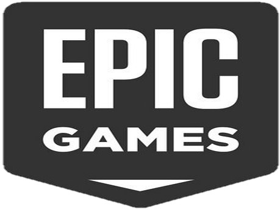

미국 노스캐롤라이나주의 캐리시에 위치한 비디오 게임, 소프트웨어 개발사이자 유통 회사(마케팅 및 판매 회사)이다. 팀 스위니가 1991년 메릴랜드주의 포토맥시에 '포토맥 컴퓨터 시스템스'라는 이름으로 창업했다.
출범 후 제작한 첫번째 게임 《ZZT》 (1991)를 출시한 직후 이름을 '에픽 메가게임즈'로 바꿨고, 당시 회사를 사들인 마크 레인은 부사장직을 현재까지 유지하고 있다.
1999년 캐리 시로 본부를 옮기면서 지금 에픽게임즈로 사명을 바꿨다.
1990년대 초중반에는 《재즈 잭래빗》 등 중규묘의 게임들을 개발하다, 1998년 출시한 1인칭 슈팅 게임 《언리얼》을 시작으로 자사가 개발한 언리얼 엔진을 타사에 제공 및 판매하기 시작했다. 이 엔진을 바탕으로 《인피니티 블레이드》, 《기어즈 오브 워》. 《포트나이트》 등을 출시했다.
자회사로 게임 개발사 체어 엔터테인먼트와 클라우드 기반 소프트웨어 개발사 클라우드진를 소유하고 있고, 본사 이외에 시애틀, 잉글랜드, 베를린, 요코하마 및 서울에 부개발 스튜디오를 설립했다. 2018년부터 디지털 배급 상점 에픽게임즈 스토어를 운영하고 있다.
2018년 12월 초에 에픽게임즈에서 게임 서비스 플랫폼 공개를 예고함으로써 자체 플랫폼 런칭을 암시했으며, 2018년 12월 7일에 2018 더 게임 어워드에서 상세 내용이 공개되었다.
런칭 이후 2개월 가량이 지난 2019년 2월 기준으로 아직 글로벌 출시된 게임들이 한국의 등급 심의 등의 문제로 인해 국내 서비스는 지연되는 상태다. 국내 법 준수로 인해 대부분의 게임에 지역락이 걸려있어 한국에서는 이용이 아직 불가능하다.
이는 게임 등급 심의와 관련된 문제로 에픽게임즈 코리아는 자체등급분류사업자 선정을 통한 자체 등급심사나 대행심사 등 여러 방법을 통해 해결해나갈 것이라고 공지하였다.
2019년 1월 12일에 환불정책이 스팀과 동일한 2주, 2시간 플레이 내 조건으로 바뀌었다.
2019년 4월 12일에 한국에서도 정식 서비스를 개시한다.